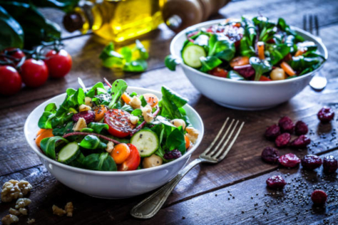

Receita de uma deliciosa salada
Ingredientes
- 1 alface americana
- 2 cenouras raladas
- 1 beterraba ralada
- 1 tomate sem pele e sem semente
- 1 cebola cortada em rodelas ou picada
Molho
- 1 colher (chá) de sal
- 1 pitada de açúcar
- 1 colher (sopa) de azeite extra virgem de oliva
- 2 a 3 colheres de vinagre

Modo de preparo
- Lave bem todos os ingredientes.
- Rasgue as folhas do alface para que fiquem menores. Rale as cenouras e a beterraba.
- O tomate, após estar sem pele e semente, deve ser picado. A cebola pode ser cortada em pedacinhos ou em rodelas, como preferir.
- Junte tudo.
Molho
- Junte o açúcar, sal, azeite e vinagre em uma xícara.
- Misture bem com uma colher e despeje sobre a salada.
- Sirva.